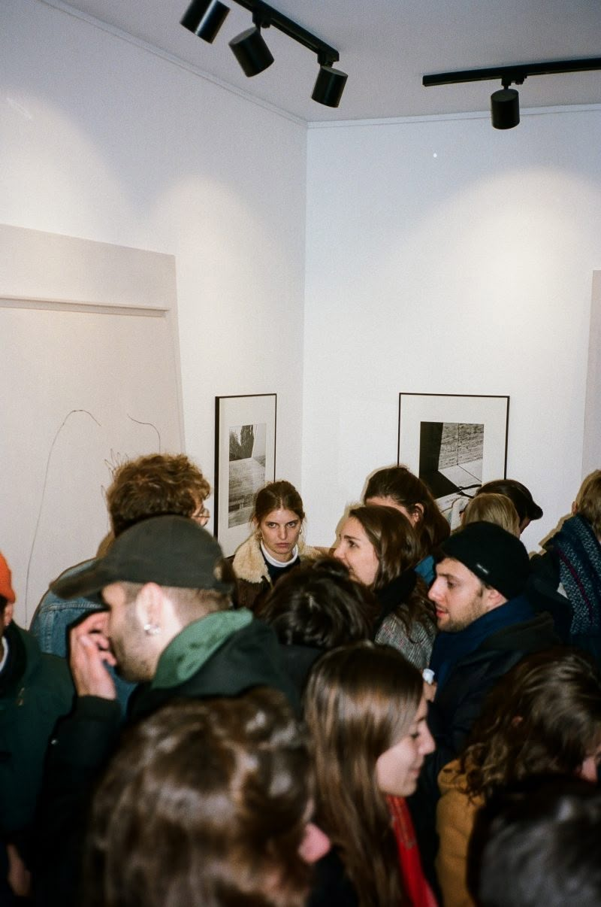

Vernissage
9 novembre, à partir de 18h | Entrée libre
Discuter
Salomé, curatrice de l'exposition, animera les temps forts du vernissage. D'abord, une balade culturelle te permettra de découvrir les œuvres et de comprendre les questions qui ont guidé le montage de cette exposition. Ensuite, un atelier de création te sera proposé : tu seras invité.e à produire une œuvre libre, à partir des techniques du collage et de l'aquarelle. Tout le matériel sera mis à ta disposition.